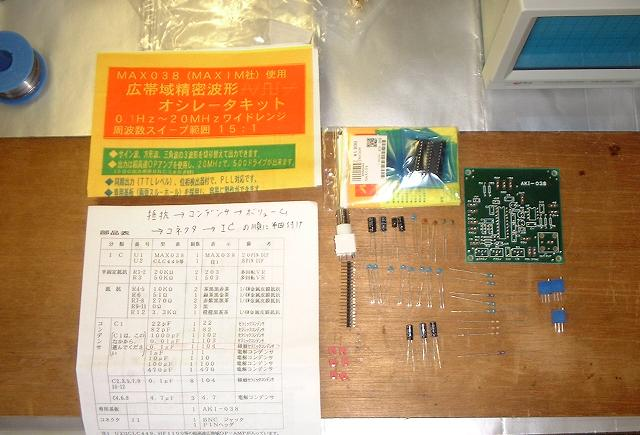
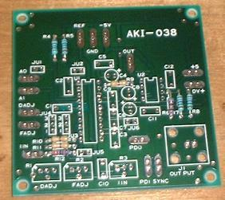
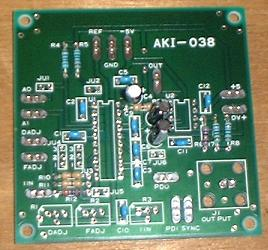
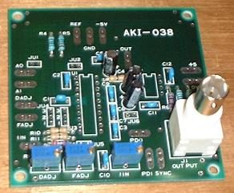
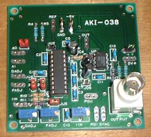
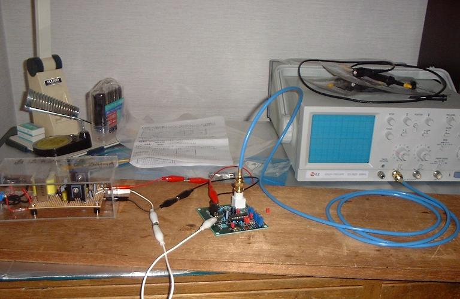
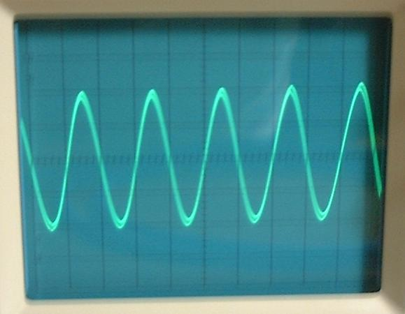
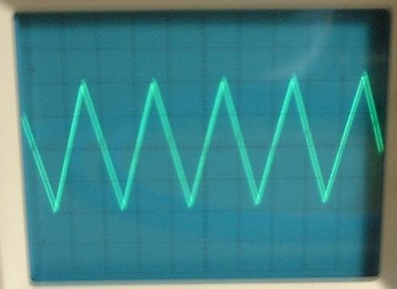
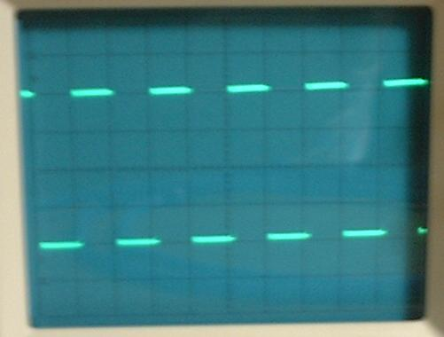

前回の続きで、(半年以上前に買ったまま作らずに寝かせていた) 秋月電子の「MAX038使用・広帯域精密波形オシレータキット」を製作することにします。
※免責事項: このページは個人的な趣味としてやっている電子工作を披露するだけのものなので、情報の信頼性などは100％保証できません。参考にされる際は自己責任でお願いします。

とりあえず部品表を見ながら部品が全部揃っているか確認してみます。
IC 二つ、ボリュームが三つ、抵抗器が９個、コンデンサ２０個、基板、BNC ジャック、ピンヘッダ、・・・全部あるようです。
そういえば抵抗器の中に 0Ω の抵抗というものがありました (初めて見ました)。カラーコードは黒い線が一本だけ。
これは何のためにあるんだろうと思ってネットで検索してみたら、「形を揃えるため」とか、「性能テストのときに他の抵抗に入れ替えるため」とか、「機械で実装するときに単線より都合が良い場合がある」、など、いろいろ理由があるみたいです。
このキットの場合はボリュームの調節とか、基板の設計上の都合でしょうか。
まだよく分かりませんが…。
また、写真で基板の真横 (左側) に９個のコンデンサが並んでいますが、この中から１つを選択することにより、周波数レンジが決まるようです。今回は実験用の 1kHz の波が出せるように、0.1μF のものを選択しました (真ん中あたりの青いやつ)。この場合周波数レンジは 500Hz〜7500Hz となるようです。
説明書には「抵抗、コンデンサ、ボリューム、コネクタ、IC の順に半田付けしていきます」と書いてあるので、その通りやっていくことにします。
どこに何を付ければ良いか、基板上に書いてあるので、部品表と見比べれば分かりやすいです。
回路図とも見比べておいて、間違いないか確認しながらやっていきます。




私のはんだ付けの技術も最初に比べればずいぶん上達しました。
穴とパーツの足をはんだこてで温めておいて、穴にはんだを流し込むようにするとうまくいきます。
慣れない頃は、はんだの量が多すぎて何度も吸い取り線や吸い取り器のお世話になっていたものですが、今回は一度もそのようなことはなく、手早くできました。
出来上がったキットを前回作った電源につないで、出力側には (キットと一緒に買っておいた) BNC ケーブルでオシロスコープに接続します。

実は、電源に刺しているピンチップにつないだ導線が短すぎて (廃材を再利用したのですがそれが裏目に出た)、電源側がうまく接続できなかったので、ミノムシクリップを複数使った間抜けな配線になっています。
露出部があって電源のショートが怖いので、次回以降はここを直して使用する必要があるようです。



このキットはボリュームで周波数などが調節でき、ジャンパーによって出力波形を選べるようになっています。上の写真は、周波数を 1kHz に合わせて、 正弦波、三角波、方形波を出力させてみたものです (写真がことごとくボケているのが残念ですが (^^;)。
けっこうきれいな波形で、すばらしい。
今回はここまでにしますが、これで満足してはいけないので、今後もこのキットをいろいろな実験に活用していきたいところです。
{kind=link}
{kind=link}
{kind=link}
{kind=link}
{kind=link}
{kind=link}
{kind=link}
{kind=link}
{kind=link}